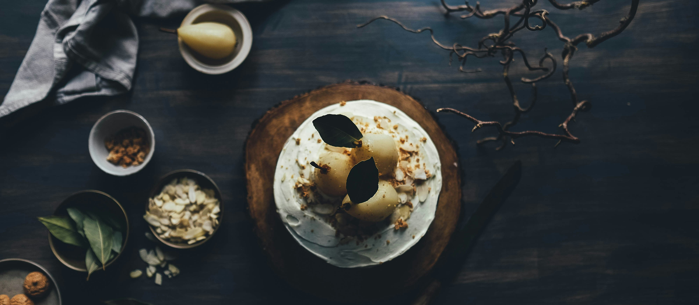
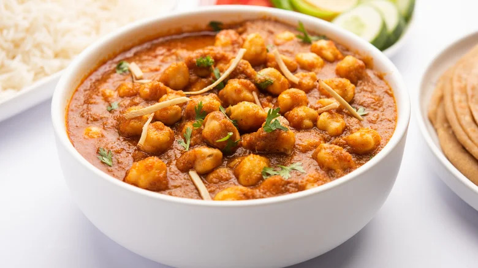

Japanese cuisine
Sushi & Sashimi
Ingredients :
Step :
- Prepare the Sushi Rice:
- Rinse the sushi rice under cold water until the water runs clear.
- Combine rice and water in a rice cooker and cook according to the rice cooker’s instructions. If you don’t have a rice cooker, you can cook it on the stovetop.
- Once cooked, let the rice sit for 10 minutes.
- In a small saucepan, heat the rice vinegar, sugar, and salt until dissolved. Let it cool slightly.
- Spread the cooked rice in a large bowl or dish and gently fold in the vinegar mixture with a spatula. Let the rice cool to room temperature.
- Prepare the Fillings:
- Slice the fresh fish and vegetables into thin strips.
- Set Up Your Rolling Station:
- Cover the bamboo mat with plastic wrap to prevent sticking.
- Place a nori sheet, shiny side down, on the bamboo mat.
- Assemble the Sushi Rolls:
- With wet hands, take a handful of sushi rice and spread it evenly over the nori sheet, leaving a 1-inch border at the top.
- Place the fillings in a horizontal line across the middle of the rice.
- Roll the Sushi:
- Lift the bamboo mat edge closest to you and begin to roll it away from you, keeping the filling in place with your fingers. Use the bamboo mat to shape and compress the roll.
- Wet the top border of the nori with a bit of water to seal the roll.
- Slice and Serve:
- Use a sharp, wet knife to slice the roll into bite-sized pieces.
- Serve with soy sauce, pickled ginger, a
Indian cuisine
Chana masala

Ingredients :
Step :
- Prep the Chickpeas:
- If using dried chickpeas, soak them overnight in plenty of water. Drain and rinse them before cooking.
- If using canned chickpeas, drain and rinse them thoroughly.
- Cook the Chickpeas:
- For dried chickpeas: Boil them in a large pot of water until tender (about 1-1.5 hours), or cook them in a pressure cooker for about 20-25 minutes until soft.
- Set aside the cooked chickpeas.
- Prepare the Masala:
- Heat the oil in a large pan over medium heat.
- Add the cumin seeds and bay leaf, and let them sizzle for a few seconds until fragrant.
- Add the chopped onions and sauté until golden brown.
- Add the ginger-garlic paste and green chilies, and cook for another 2-3 minutes until the raw smell goes away.
- Cook the Tomatoes and Spices:
- Add the chopped tomatoes and cook until they soften and the oil begins to separate from the mixture.
- Add the turmeric powder, coriander powder, cumin powder, red chili powder, and chana masala powder (if using). Mix well and cook for a couple of minutes.
- Combine and Simmer:
- Add the cooked chickpeas to the pan and mix well to coat them with the masala.
- Pour in the water, add salt to taste, and bring to a boil.
- Reduce the heat and let it simmer for about 20 minutes, allowing the flavors to meld together and the gravy to thicken.
- Finish and Serve:
- Stir in the garam masala and mix well.
- Garnish with fresh coriander leaves.
- Serve hot with rice, roti, naan, or your favorite bread. Optionally, serve with lemon wedges on the side.